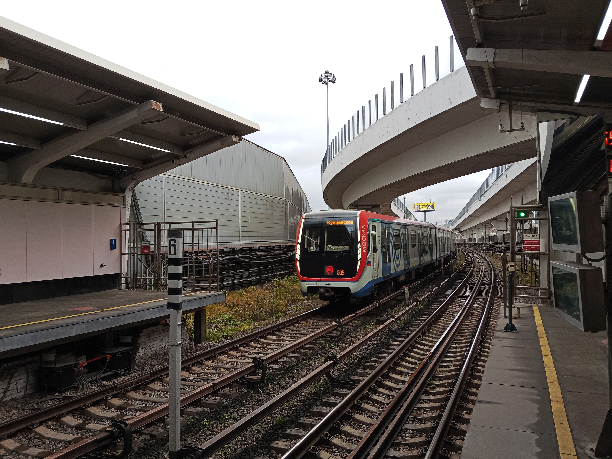
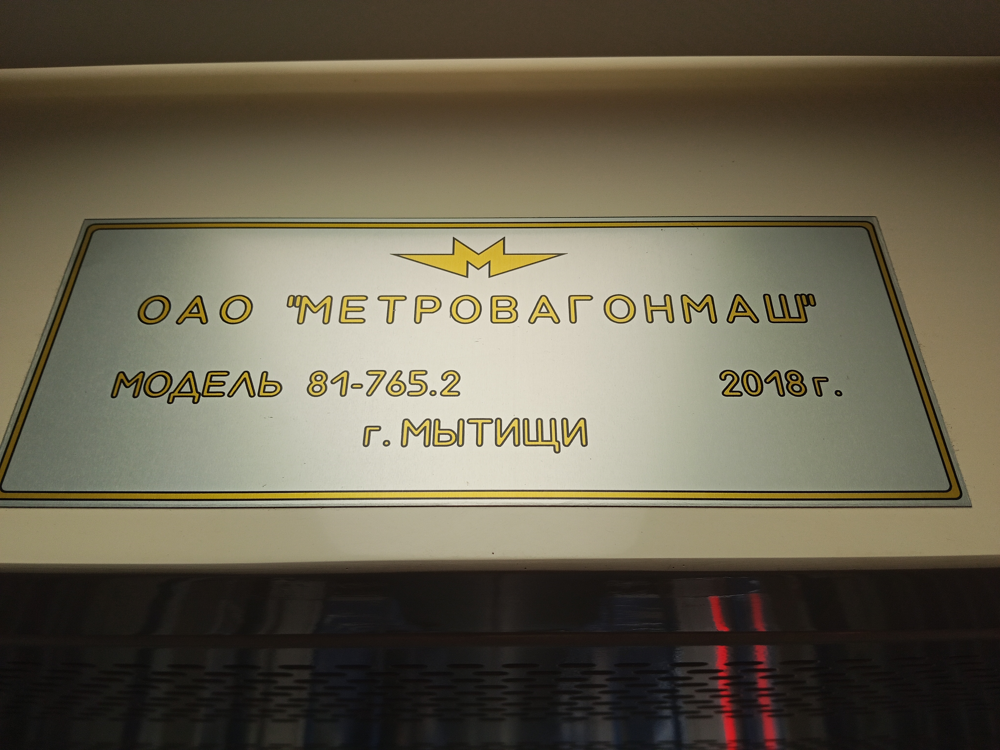

81-765.2/766.2/767.2 «Москва»
81-765.2/766.2/767.2 — модификация базового поезда «Москва», созданная специально для эксплуатации на Филёвской линии Московского метрополитена. Значительная часть этой линии проходит по поверхности, поэтому поезд получил ряд изменений для комфортной работы в условиях открытых участков.
В отличие от базовой модели, которая в основном работает в 8-вагонной составности, для Филёвской линии были заказаны шестивагонные составы (с одним прицепным вагоном). Всего было выпущено 27 таких поездов.
Общая информация
| Параметр | Значение |
|---|---|
| Годы постройки | 2018 |
| Производитель | Трансмашхолдинг (Метровагонмаш) |
| Типы вагонов | Мг (81-765.2) / Мп (81-766.2) / Пп (81-767.2) |
| Составность | 6 вагонов (Мг+Мп+Пп+Мп+Мп+Мг) |
| Количество составов | 27 |
| Ширина дверного проёма | 1400 мм |
| Макс. скорость | 90 км/ч |
| Вместимость | Мг: 315 / Мп, Пп: 329 чел. |
| Сидячих мест | Мг: 28+4 пс / Мп: 36+8 пс |
Ключевые особенности
🚪 Кнопки открытия дверей
На дверях установлены кнопки адресного открытия. В условиях низкого пассажиропотока (особенно на наземных участках зимой) пассажир может открыть только нужную ему дверь, не выпуская холодный воздух через весь вагон.
🪑 Новая планировка сидений
В головных вагонах применена частично продольная планировка. Часть сидений обращена лицом к проходу, а часть — лицом по направлению движения (для лучшего обзора). В промежуточном прицепном вагоне появились откидные сиденья.
🧵 Тканевая обивка
В отличие от базовой модели с кожаными сиденьями, здесь используется тканевая обивка. Это сделано для комфорта пассажиров, так как в наземных условиях сиденья могут быть холодными.
❄️ Адаптированный климат
Система климат-контроля доработана с учётом эксплуатации на открытом воздухе. Она эффективнее справляется с перепадами температур и лучше сохраняет тепло зимой.
📺 Маршрутные дисплеи
Вместо наддверных схем с диодной подсветкой установлены яркие экраны, на которых отображается схема линии. Это обеспечивает лучшую видимость при ярком солнечном свете на наземных участках.
🚶 Упрощённые поручни
Вертикальные поручни напротив дверных проёмов были возвращены, но их форма упрощена для большего удобства пассажиров при входе и выходе.
История
Начало поставок
Начались поставки шестивагонных составов модификации .2 для работы на Филёвской линии.
Начало пассажирской эксплуатации
Составы 81-765.2/766.2/767.2 официально начали перевозить пассажиров на Филёвской линии, постепенно заменяя поезда «Русич».
Завершение выпуска
Всего было изготовлено 27 шестивагонных составов данной модификации, которые полностью закрыли потребности Филёвской линии в обновлении подвижного состава.

📌 Перегон Студенческая — Кутузовская
Состав на перегоне.

📌 Салон вагона Москвы.
Заводская табличка в вагоне.

📌 Станция "Кунцевская".
Салон, вид вперед.
«Модификация .2 — это яркий пример того, как один и тот же поезд адаптируют под конкретные условия. Для Филёвской линии, где зимы суровы, а платформы открыты ветрам, «Москва» получила кнопки на дверях и тканевые сиденья, чтобы поездка оставалась комфортной в любую погоду».